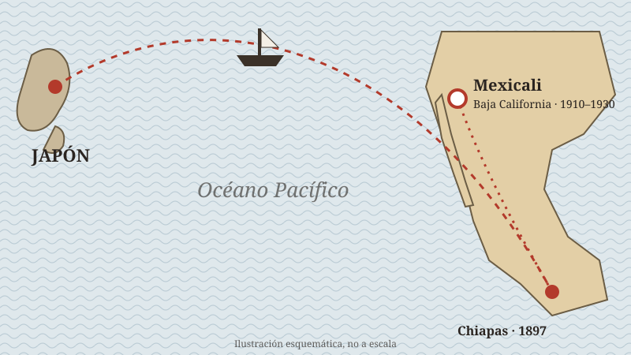
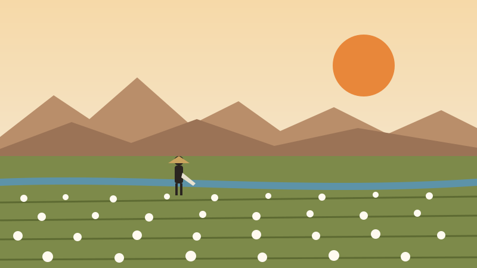

Introducción
La migración japonesa a México es una de las más antiguas de América Latina. Comenzó formalmente a finales del siglo XIX, cuando ambos países firmaron un tratado de amistad y comercio, y continuó durante las primeras décadas del siglo XX con miles de trabajadores que llegaron a minas, ferrocarriles y campos agrícolas.
Muchos de esos inmigrantes se movieron hacia el norte del país. En Baja California, y en particular en el Valle de Mexicali, encontraron trabajo en la agricultura de riego, sobre todo en el cultivo de algodón. Con el tiempo formaron familias, abrieron negocios y dejaron una huella que todavía se reconoce en la ciudad.
A los japoneses nacidos en Japón que emigraron se les llama issei (primera generación); a sus hijos nacidos en México, nisei; y a toda la comunidad de origen japonés fuera de Japón, nikkei.
Antecedentes históricos
Japón en la era Meiji
A partir de 1868, con la Restauración Meiji, Japón se abrió al mundo y se modernizó rápidamente. Sin embargo, los altos impuestos sobre la tierra y la pobreza en el campo empujaron a muchos campesinos, sobre todo de prefecturas del sur como Kumamoto, Fukuoka, Hiroshima y Okinawa, a buscar trabajo en el extranjero.
El tratado con México
El 30 de noviembre de 1888 México y Japón firmaron el Tratado de Amistad, Comercio y Navegación. Para Japón fue muy importante, porque fue el primer tratado en condiciones de igualdad que firmó con un país de Occidente. Este acuerdo abrió la puerta a la llegada de colonos japoneses.
La Colonia Enomoto y los trabajadores por contrato
En 1897 llegó a Chiapas un grupo de colonos impulsado por el político Enomoto Takeaki, conocido como la Colonia Enomoto, considerado el primer asentamiento japonés organizado en América Latina. Entre 1900 y 1910 llegaron miles de trabajadores contratados por compañías de emigración para trabajar en minas de carbón de Coahuila, minas de cobre de Sonora, ingenios azucareros y la construcción de vías del ferrocarril.
Llegada a Mexicali

Motivos de la migración
Mexicali fue fundada en 1903. Gracias al agua del río Colorado, el valle se convirtió muy pronto en una zona agrícola importante, y empresas como la Colorado River Land Company necesitaban mucha mano de obra. Además, desde 1907-1908 el llamado Acuerdo de Caballeros entre Estados Unidos y Japón limitó la entrada de japoneses a ese país, por lo que muchos se quedaron en la frontera mexicana.
Rutas de llegada
Los inmigrantes llegaron a Mexicali por varios caminos. Un recorrido típico era:
- Salida desde un puerto japonés, como Yokohama o Kobe.
- Travesía del océano Pacífico en barco, de varias semanas.
- Llegada a puertos mexicanos como Salina Cruz o Manzanillo, o a puertos de Estados Unidos.
- Trabajo temporal en minas, ferrocarriles o plantaciones del país.
- Viaje hacia el norte, por Sonora o desde California, hasta el Valle de Mexicali.
Los primeros establecimientos
Los primeros japoneses del valle trabajaron como jornaleros y después como arrendatarios: rentaban parcelas para sembrar algodón y otros cultivos. Algunos se establecieron en la ciudad y abrieron pequeños comercios. Poco a poco formaron una comunidad unida que se apoyaba en asociaciones y en la ayuda mutua.
Desarrollo de la comunidad japonesa

Durante las décadas de 1910 a 1930 la comunidad japonesa participó en el auge algodonero del valle. Su experiencia en técnicas de cultivo, su disciplina de trabajo y su organización comunitaria les permitieron prosperar. También se dedicaron al comercio, a los servicios y a la producción de hortalizas para la ciudad.
Actividades económicas
| Actividad | Descripción | Aportación a Mexicali |
|---|---|---|
| Agricultura | Cultivo de algodón como jornaleros y arrendatarios. | Impulso al principal producto de exportación del valle. |
| Horticultura | Siembra de verduras y hortalizas en parcelas pequeñas. | Abasto de alimentos frescos para la ciudad. |
| Comercio | Tiendas de abarrotes, mercancías y productos importados. | Crecimiento del comercio local. |
| Servicios | Oficios como barbería, fotografía, sastrería y restaurantes. | Nuevos servicios para una ciudad en formación. |
| Pesca (costa de B.C.) | Pesca y procesamiento de productos del mar en Ensenada. | Conocimientos técnicos compartidos en la región. |
Un momento difícil: la Segunda Guerra Mundial
Tras el ataque a Pearl Harbor en diciembre de 1941, México rompió relaciones con Japón y, en 1942, el gobierno ordenó que las familias japonesas que vivían en la frontera y en las costas se trasladaran al interior del país, principalmente a la Ciudad de México y Guadalajara. Muchas familias de Mexicali tuvieron que dejar sus tierras y negocios. Al terminar la guerra, algunas regresaron a Baja California y comenzaron de nuevo, un ejemplo de lo que en japonés se llama gaman: resistir con paciencia y dignidad.
Influencia cultural

La cultura japonesa se mezcló con la mexicana y con la vida fronteriza de Mexicali. Las familias nikkei conservaron valores como el respeto a los mayores, la puntualidad y el trabajo en equipo, y al mismo tiempo adoptaron el idioma, la comida y las fiestas de México.
Aportaciones culturales
- Gastronomía: el gusto por el arroz, la soya y el sushi, que en el norte de México se transformó en versiones locales con queso crema, chile y empanizado.
- Botanas: los populares cacahuates japoneses, creados en México por el inmigrante Yoshigei Nakatani.
- Festividades: celebraciones como el Obon, dedicado a honrar a los antepasados, y festivales con tambores taiko.
- Artes: el origami, la caligrafía shodō y el arreglo floral ikebana.
- Deportes: la práctica de artes marciales como el judō y el karate.
- Valores: la disciplina, la ayuda mutua y la organización comunitaria.
Actualidad
Hoy en día viven en Mexicali descendientes de tercera y cuarta generación, conocidos como sansei y yonsei. Muchos se identifican plenamente como mexicalenses y participan en todos los ámbitos de la ciudad: la agricultura, el comercio, la medicina, la educación y la cultura.
Las organizaciones de la comunidad nikkei en Baja California organizan actividades culturales, clases de idioma japonés y festivales que mantienen viva la memoria de los primeros inmigrantes. Además, la presencia de empresas japonesas en la región fronteriza ha renovado los lazos entre Mexicali y Japón.
¿Cómo se conserva la herencia?
Memoria familiar
Fotografías, documentos y relatos que las familias guardan y comparten.
Investigación
Estudios de universidades como la UABC y de instituciones como El Colegio de México.
Línea del tiempo
Fechas y acontecimientos importantes de la migración japonesa a México y a Mexicali.
| Año | Acontecimiento | Lugar |
|---|---|---|
| 1868 | Inicia la era Meiji y la modernización de Japón. | Japón |
| 1888 | Se firma el Tratado de Amistad, Comercio y Navegación. | México y Japón |
| 1897 | Llega la Colonia Enomoto. | Chiapas |
| 1900–1910 | Llegan miles de trabajadores por contrato. | Coahuila, Sonora, Veracruz |
| 1903 | Se funda la ciudad de Mexicali. | Baja California |
| 1907–1908 | El Acuerdo de Caballeros limita la entrada a EE. UU.; muchos se quedan en la frontera. | Frontera norte |
| 1910–1930 | Auge algodonero y crecimiento de la comunidad japonesa. | Valle de Mexicali |
| 1942 | Traslado forzoso de familias japonesas al interior del país. | Mexicali → CDMX, Guadalajara |
| 1945 en adelante | Algunas familias regresan y reconstruyen su vida. | Baja California |
| Hoy | Las nuevas generaciones nikkei conservan su herencia. | Todo México |
| Fuentes: ver la sección de referencias. | ||
Conclusión
La migración japonesa es parte de la identidad histórica y cultural de Mexicali. Los inmigrantes llegaron buscando una vida mejor y, a pesar de las dificultades, como el trabajo duro en el desierto o el traslado forzoso durante la guerra, contribuyeron al desarrollo agrícola y comercial del valle.
Conocer esta historia nos ayuda a entender que Mexicali es una ciudad construida por muchas culturas. Valorar la herencia japonesa también es valorar la diversidad que hace única a nuestra frontera.
Formulario: comparte tu historia
¿Tu familia tiene relación con la comunidad japonesa de Mexicali? ¿Te gustó esta página? Déjanos tus comentarios.
Referencias bibliográficas
Libros
- Ota Mishima, M. E. (1982). Siete migraciones japonesas en México, 1890-1978. El Colegio de México.
- Hernández Galindo, S. (2011). La guerra contra los japoneses en México durante la Segunda Guerra Mundial. Itaca.
Sitios web (enlaces externos)
- Inmigración japonesa en México — Wikipedia.
- Descubra a los Nikkei — Japanese American National Museum.
- Embajada del Japón en México — relación bilateral México–Japón.
- Instituto Nacional de Antropología e Historia (INAH).
- Universidad Autónoma de Baja California (UABC).